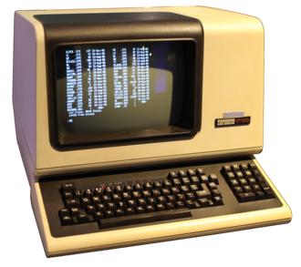

This chapter introduces some of the key tools and technologies that are typical to development in open source. Specific tools and technologies tend to change over time, but the concepts tend to remain, so this chapter focuses on the concepts at a high level first, and then offers case studies of specific tools and technologies that are popular at the moment. (Fortunately, because this book is open source, the specifics can be easily changed by many contributors as time dictates.)
It is perhaps worth noting that the tools and technologies discussed in this chapter are not just specific to open source development. They are relevant to software engineering more generally, so what readers learn here is also broadly applicable to development work in industry.
In this section, we explain some terminology related to the command line, why developers use it, and then get set up to use it ourselves. If you have worked with the command line previously, then this entire section may serve as a review. Otherwise, this section is written with you in mind.
Subsection3.1.1Terminals and Related Terms
What is a terminal?
The English word terminal means to be situated at the end of something, and the term’s meaning in computing has evolved since it was originally coined in the 1960s.
Prior to the development of the first programmable electronic computers, computers were people (mostly women) who used mechanical calculators to compute complex mathematical computations quickly and accurately. The earliest electronic computers, such as Colossus and ENIAC, required specialized technical knowledge and skill to program because programming these machines was a complex process that involved physically entering commands flipping switches, pushing buttons, and manually moving patch cords.

Figure3.1.1.The DEC VT100, a widely emulated computer terminal
The development of the terminal interface in the 1960s marked a significant shift in the way users interacted with computers because the terminal provided a convenient and much more accessible way to provide input and obtain output, allowing users to remotely interact with a computer via a keyboard and screen. Back when the terminal was first used in computing, what we refer to as the terminal today was the only interface available to the user, while now it is used to refer to a specific type of text-based programming interface. In particular, today a terminal simply refers to a text-based interface that allows a user to interact with a computer by entering commands and receiving output on a display screen.
What is a console?
The English word console comes from the related verb, to console, which means to provide support. In computing, the original meaning of the console was as a physical device that supported input into and output from a computer. The term is still used that way, but it has also come to be synonymous with terminal in some environments. For example, if you search for console on a Windows machine, you may find the terminal program and/or you may find a security console program.
What is a Command Line Interface (CLI)?
A CLI refers to any interface that works with text-based commands and text-based output. We will be using a shell, which is an example of a CLI.
What is a shell?
A shell is a program which parses and interprets the commands you enter in the terminal and then executes them, often using functionality provided directly by the operating system. In other words, a shell is a CLI which serves as the interface between the end-user and the operating system. It is called a shell because it is a user interface layer directly surrounding the kernel, which is the innermost part of the operating system.
A terminal/console will typically seamlessly offer direct access to a shell as well as other CLI programs, so although these terms are distinct from one another as described above, you will often hear people use the terms terminal, CLI, console, and shell almost interchangeably. Don’t let it worry you too much because you should almost always be able to understand what is meant from the context.
Subsection3.1.2Why not a GUI?
Given that Graphical User Interfaces (GUIs) came into widespread use decades ago, it may seem surprising that nearly all software developers utilize a non-graphical shell. The primary reasons for this include:
Speed of Use.
The speed one can type a command is typically many times faster than the speed at which one can select a command from a menu.
Expressiveness.
The shell facilitates features that are unavailable or difficult to access in a GUI. The mouse only allows for picking among the small set of predetermined options from the screen. However, for most systems many more options are actually available.
Automation.
If you need to do something that is repetitive or requires combining multiple commands, the shell facilitates this too since shells can be programmed using a scripting language, allowing repetitive and/or complex tasks to be automated via a script.
Subsection3.1.3Accessing a Terminal Window on your Machine
Regardless of whether you are using macOS, Linux, or Windows, you are able to set up a development environment, open a terminal, and access a shell. Some good news is that all of these OSs offer shells that are largely compatible. This is useful for a variety of reasons, including being able to find a useful answer when searching on how to accomplish various tasks on the Internet.
On a Mac.
If you are on a Mac, you have a couple of good options. With any Mac, the built-in Terminal program allows you to access a shell. If you are looking for a more customizable and feature-rich terminal program, then you might want to consider iTerm2 1 
iterm2.com/downloads.html
. Opening the Terminal on a Mac works like opening any other program: you can find it in the Applications folder, you can search for it, you can use the Launchpad, or you can use its shortcut which is command(⌘)+T.
On a Linux machine.
On a machine running Linux, the terminal is often also called the Terminal, although depending upon the Linux environment, the name may differ. Konsole may also be used. Regardless of what it is called, you can typically access the terminal in several ways: search for the keyword Terminal, right-click on your desktop and then select "Open Terminal", or use the shortcut Ctrl+Alt+T.
On a Windows machine.
If you are on a Windows machine, you are in good company. In 2023, Windows is by far the most popular OS for desktops and laptopsHowever, if you are on a Windows machine, you will need to do some work to set up a development environment. If you are on a Windows machine, you have a number of options, but assuming everything will be just fine working in your normal Windows environment is simply not going to work. Seriously! So, please save yourself a lot of time, read on, and follow the directions below.
Here is why your normal environment won’t work. In Windows, the terminal/shell is historically called the command prompt (cmd), although a newer very different terminal/shell called PowerShell has also been around for decades. Neither of these terminals/shells are compatible with the default shell programs available on macOS and Linux. Note that for OSS development, it will be vastly superior to have access to a shell that is compatible with the macOS and Linux ones because these are the typical shells that developers use.
will give you the best experience by far. Note that you may first need to update your version of Windows, see https://bit.ly/Windows-Update-FAQ. WSL2 provides a full Linux kernel that is integrated into the Windows operating system. After you have followed the linked directions to install WSL2, including the installation of Linux (the default, Ubuntu an excellent choice), be sure to set-up your Linux user information that you will never forget! Once all this is complete, the shell is most easily accessed by searching for Ubuntu in the search tool next to the Windows Icon and selecting it when you see it. For convenience, consider right-clicking on the Ubuntu icon and pinning it to your Start menu or to your Taskbar. Now Ubuntu will provide you a great shell to work with as you are developing, so be sure to use it for all of your development work.
If you are running an earlier version of Windows, or an outdated version of Windows 10 that you cannot update, then you have several choices. For simpler development environments, using MinGW 3 
mingw.osdn.io/
provides a lightweight solution, so you might try this. For a more complicated development environment such as one that utilizes virtualization, using a Virtual Machine (VM) environment such as Virtual Box 4 
virtualbox.org/
and installing and running Ubuntu inside the VM is advisable. For a cloud option, see below.
Another OS.
Although Linux, Mac, and Windows (to a lesser extent) are by far the most typical OSs, developing in another OS environment might also be possible. For example, searching the Internet on "software development in ChromeOS" will provide several useful links for how to set up a development environment in ChromeOS. Just be aware that developing in an OS environment other than Linux, Mac, or a modern version of Windows is likely to offer little in the way of support, so you might be better off using a cloud-based development environment or a virtual machine (VM) environment.
Installing Linux in a Virtual Machine (VM) Environment.
If you have no other options among those that were detailed above and you have sufficient RAM and secondary storage available, then you might consider installing Linux in a VM. Using Linux in a VM will create at least some lag, which might be significant, nevertheless this may be a good choice if you are on an older Windows machine and want to develop off-line. If this describes your use-case, you might try it since it is cost-free. Try VM software such as Virtual Box 5 
virtualbox.org/
, installing and running Ubuntu in the VM, and then following the Ubuntu directions above.
Dual Boot With Linux.
If your computer does not have sufficient RAM and enough processing power for properly running a virtual machine, a different option might be to proceed with a dual boot installation with your current operating system and Linux. This method will allow you to start your computer with Linux whenever you need to access your development environment.
In the Cloud.
To contribute to most open source projects, you will need to set-up a build environment for local testing. While it is typical to have a local development environment to work in, there has recently been an influx of cloud providers which offer solutions for cloud-based development environments. These have the benefit that they require less setup than a local development environment, but are often only free within constraints and otherwise incur a monthly fee, which might be waived for a trial period or for students.
Cloud Development Environments (CDEs) are full development environments in the cloud. The best known and most feature-rich is GitHub Codespaces. 6 
github.com/features/codespaces
A couple of the other popular cloud development environments include AWS Cloud9 7 
All of these environments try to help you set up your development environment with ease, and you can mostly likely find a way to at least try them for free.
For the purposes of this chapter, if you cannot quickly set up your local environment or cloud environment, you can practice using a shell at Fabrice Bellard’s JSLinux 9 
bellard.org/jslinux/
which provides a very small cloud-based virtual machine environment. (Choosing the riscv64 Linux console will work for all of these exercises.) Note that this a free service which has a capped bandwidth of 40 kB/s. You are asked to please be respectful and don’t abuse the service.
Subsection3.1.4Your Shell
Many shells are available for Linux, but the most popular is the Bourne-again shell (bash) shell, the next section is focused on bash. If you are using another shell like zsh, which is now the default on macOS and many people’s preference over bash, then don’t worry. The different shells available on Linux and macOS are largely compatible with each other and you will almost certainly not run into any issues by using zsh.
If you have reached the end of this section, you should be able to open a terminal window to access a shell. In the next section, you will get some practice with some basic shell commands.
Checkpoint3.1.2.
What is the primary purpose of a Command Line Interface (CLI) in computing?
To provide a graphical user interface for software developers.
A Command Line Interface (CLI) is different from a graphical user interface (GUI) and involves text-based commands instead of graphical elements.
To enhance user experience by offering a wide range of customizable options not found in Graphical User Interfaces (GUIs).
While a CLI offers powerful features, its primary purpose is not specifically about enhancing user experience through customization.
To support input and output from a computer via a keyboard and screen.
Correct! A Command Line Interface (CLI) allows users to interact with a computer by entering text-based commands and receiving output on a display screen.
To serve as a physical device that supports hardware connections and programming for a computer.
A CLI is a software interface and not a physical device. It does not directly involve hardware connections or programming.